153 — Contratos API, compatibilidad y evolución
Parte: 12 — Arquitectura cloud-native y sistemas distribuidos
Nivel: avanzado-experto · Horas estimadas: 4
Laboratorio: api · Estado: EXECUTABLE_CORE
🎯 Propósito
Hacer que dos piezas puedan evolucionar sin coordinarse, que es la única razón por la que se separaron. La clase sostiene tres cosas incómodas: que el contrato es mucho más que el esquema, y que la mayoría de las roturas ocurren en lo que el esquema no describe; que con suficientes consumidores, cualquier comportamiento observable se convierte en parte del contrato aunque nadie lo prometiera; y que la compatibilidad no se consigue con disciplina sino comprobándola automáticamente, con una técnica que además resuelve la pregunta de quién consume esto.
📚 Resultados de aprendizaje
Al finalizar podrás:
- Enumerar todo lo que forma parte de un contrato además del esquema.
- Reconocer los comportamientos no prometidos de los que alguien ya depende.
- Escribir clientes tolerantes que no se rompan con cambios compatibles.
- Comprobar la compatibilidad de forma automática, no por disciplina.
- Evolucionar un contrato sin versionar, y versionar solo cuando no quede otra.
🧩 Conceptos centrales
| Concepto | Comprensión verificable |
|---|---|
contrato |
Todo lo que quien consume puede observar y de lo que puede depender: forma, significado, errores, tiempos, orden, límites y efectos. |
comportamiento observable |
Cualquier cosa que se pueda medir desde fuera. Con bastantes consumidores, alguien depende de ella aunque no esté documentada. |
lector tolerante |
Cliente que ignora lo que no conoce, valida solo lo que usa y no depende de lo que no se le prometió. |
contrato dirigido por el consumidor |
Cada consumidor publica lo que realmente usa; la canalización del proveedor comprueba que sigue cumpliéndolo. |
campo con alias |
Publicar el campo viejo y el nuevo a la vez durante la transición, para poder retirar el viejo sin coordinar. |
error como contrato |
Los códigos de error, su significado y si conviene reintentar forman parte del contrato tanto como los campos. |
🧠 Modelo mental
Una arquitectura es un conjunto de decisiones costosas de cambiar; su calidad se juzga contra escenarios concretos, no por la cantidad de servicios usados.
Aplicado a esta clase, separa siempre cuatro planos: intención (qué necesita el usuario), configuración (qué declaramos), estado observado (qué existe de verdad) y evidencia (cómo sabemos que cumple). Confundirlos produce diseños que se ven correctos en un diagrama pero fallan al operar.
🗺️ Flujo de razonamiento

📖 Desarrollo
1. El contrato es más que el esquema
Un esquema describe la forma de los datos. El contrato es todo lo que quien consume puede observar:
FORMA campos, tipos, obligatoriedad, anidamiento
SIGNIFICADO qué representa cada campo, en qué unidad, con qué precisión
ERRORES qué códigos existen, qué significan, cuáles conviene reintentar
TIEMPOS cuánto tarda normalmente, qué plazo tiene sentido clase 130
LÍMITES cuántas peticiones se admiten y qué pasa al superarlos
clase 118
ORDEN si los resultados vienen ordenados, y por qué
UNICIDAD si un identificador puede repetirse
IDEMPOTENCIA qué ocurre si la misma petición llega dos veces clase 116
EFECTOS qué cambia en el mundo al llamar: cobros, correos, reservas
PAGINACIÓN cómo se recorre, y si es estable mientras se recorre
Y el dato que ordena la clase:
el esquema cubre la primera línea
y la mayoría de las roturas ocurren en las otras nueve
El caso de la clase 115 es el ejemplo perfecto: el campo importe pasó de céntimos a unidades. El tipo no cambió, el esquema siguió validando, ninguna herramienta detectó nada y se emitieron mil doscientas facturas mal.
Y las otras roturas frecuentes que ningún esquema ve:
un campo opcional que antes venía siempre y ahora a veces falta
un listado que antes venía ordenado y ahora no
un código de error que cambia de 400 a 409
una operación que era idempotente y deja de serlo
una llamada que tardaba 40 ms y pasa a tardar 900
una paginación que se desordena si hay escrituras mientras se recorre
y un efecto nuevo: la operación ahora también envía un correo
La última merece atención: añadir un efecto es un cambio incompatible, aunque la respuesta sea idéntica.
Y de ahí la regla de redacción de un contrato:
lo que no se promete, se dice que no se promete
«el orden de este listado no está garantizado»
«este campo puede faltar»
«esta operación no es idempotente»
→ decirlo explícitamente es lo único que permite cambiarlo después
2. Todo lo observable acaba siendo contrato
Hay una regularidad conocida y muy incómoda:
con suficientes consumidores, CUALQUIER comportamiento observable
de tu sistema acaba siendo algo de lo que alguien depende
aunque nunca lo hayas prometido
Y sus manifestaciones concretas:
el orden en que devuelves una lista, que nunca ordenaste a propósito
el texto exacto de un mensaje de error, que alguien compara
que un identificador tenga siempre 24 caracteres
que un campo numérico nunca sea negativo
que la respuesta llegue en menos de 100 ms
que dos llamadas seguidas devuelvan lo mismo
que un campo opcional venga siempre
Y las dos consecuencias prácticas:
1. lo que no quieras que se convierta en contrato, HAZLO VARIAR
→ si el orden no está garantizado, devuélvelo desordenado a propósito
→ si el identificador es opaco, que no tenga longitud fija
2. lo que ya lleva años estable, YA ES CONTRATO
→ cambiarlo romperá a alguien, esté documentado o no
→ y la pregunta ya no es si es legítimo, sino a quién avisas
Y la primera es una técnica real y poco usada: introducir variación deliberada en lo que no se promete. Es la misma idea que la variación aleatoria de las caducidades de la clase 111, aplicada a los contratos.
El lector tolerante es la contramedida del lado del consumidor, y es la disciplina que más roturas evita:
IGNORA lo que no conoce
un campo nuevo no debe provocar un error de validación
VALIDA solo lo que usa
si no lees ese campo, no compruebes su formato
NO DEPENDE de lo no prometido
ni del orden, ni de la longitud, ni del texto de los mensajes
TRATA lo desconocido con un caso por defecto
un valor nuevo en una enumeración no debe romper nada
Y la última es la que permite que un proveedor añada estados sin coordinar: si el consumidor tiene un caso «desconocido», el proveedor puede evolucionar; si no, no.
Y conviene decirlo al revés, porque es lo que hay que exigir en la documentación:
«los clientes deben ignorar campos que no conozcan
y tratar valores desconocidos de enumeración como no soportados»
→ si no está escrito, no ocurrirá
3. Comprobar, no confiar
La compatibilidad no se consigue con buenas intenciones. Los tres mecanismos, de menor a mayor cobertura:
1. COMPROBACIÓN DE ESQUEMA EN LA CANALIZACIÓN clase 115
compara el esquema nuevo con el anterior y bloquea lo incompatible
+ barato y automático
− solo cubre la forma; no ve significados ni comportamientos
2. CONTRATOS DIRIGIDOS POR EL CONSUMIDOR ← el que más aporta
cada consumidor publica un fichero con lo que REALMENTE usa:
qué operaciones llama, con qué datos y qué espera recibir
la canalización del proveedor ejecuta todos esos ficheros contra
su versión nueva y falla si rompe a alguno
+ cubre lo que se usa de verdad, no lo que dice el esquema
+ y responde estructuralmente a «¿quién consume esto?»
− exige que los consumidores participen: es un coste organizativo
3. PRUEBAS CONTRA EL SISTEMA REAL
+ realismo máximo
− lentas, frágiles y no escalan con el número de parejas
Y la segunda merece detalle porque cambia la dinámica del equipo:
el consumidor escribe lo que espera
«cuando pido el pedido 1421, recibo un objeto con id, estado
e importe_centimos; el estado es uno de estos cinco valores»
eso se publica en un sitio común
la canalización del proveedor, en cada cambio
toma todos los ficheros publicados
levanta su versión nueva
y comprueba que satisface a todos
→ si un cambio rompe a un consumidor, la construcción falla ANTES
de desplegar
Y lo que resuelve además, que es lo más valioso:
el proveedor SABE quiénes son sus consumidores y qué usan
→ el problema de la clase 118 —no poder retirar una versión porque
no se sabe quién la usa— desaparece
→ y un campo que nadie declara usar se puede retirar sin miedo
Y sus límites honestos:
cubre a los consumidores que participan; no a los que no
→ por eso sigue haciendo falta medir el uso real clase 118
no comprueba el SIGNIFICADO
→ el caso de los céntimos pasaría igual, salvo que el consumidor
compruebe un valor concreto
→ y por eso la regla de la clase 115 sigue siendo obligatoria:
si cambia el significado, cambia el nombre
Y una tercera comprobación, barata y muy eficaz, que casi nadie hace:
reproducir tráfico real contra la versión nueva y comparar respuestas
→ detecta diferencias en campos, en orden y en tiempos
→ y no necesita que nadie escriba nada
4. Evolucionar sin versionar
Versionar es la última opción, no la primera. Lo que se puede hacer antes:
AÑADIR, NUNCA QUITAR NI RENOMBRAR
campos opcionales, operaciones nuevas, valores nuevos de enumeración
→ si los consumidores son tolerantes, esto no rompe nada
CAMPO CON ALIAS DURANTE LA TRANSICIÓN
se publica el viejo y el nuevo a la vez
se avisa
se mide quién sigue usando el viejo
y se retira cuando nadie lo use
→ es expandir y contraer de la clase 102 aplicado al contrato
VALOR POR DEFECTO EN EL PROVEEDOR
un campo que pasa a ser obligatorio se rellena con un valor
razonable para los clientes que no lo envían
TOLERAR LO QUE YA NO SE NECESITA
aceptar el campo viejo e ignorarlo, en vez de rechazarlo
Y solo cuando ninguna de esas sirve:
VERSIÓN MAYOR clase 118
con el procedimiento de retirada: medir, avisar, cortes de prueba, apagar
y con un número máximo de versiones vivas escrito de antemano
Los errores, que son la parte del contrato peor documentada:
cada error necesita
un código estable, que no cambia aunque cambie el mensaje
un significado escrito
si conviene reintentar o no clase 113
y qué debería hacer el cliente
y el formato debe ser uniforme en toda la organización clase 118
Y la distinción que más incidentes evita:
error del cliente, no reintentable petición mal formada, falta permiso
error del cliente, reintentable conflicto de versión, límite superado
error del servidor, reintentable no disponible, tiempo agotado
error del servidor, no reintentable fallo permanente en el procesamiento
Sin esa clasificación, el cliente reintenta lo que no debe y no reintenta lo que sí, que es la mitad de los problemas de la clase 113.
Contratos internos y externos tienen ritmos distintos, y conviene no tratarlos igual:
INTERNOS se conocen todos los consumidores
se pueden cambiar en semanas, con contratos comprobados
versiones vivas: 1, casi siempre
EXTERNOS no se controla a los consumidores
cambios en meses, con procedimiento de retirada clase 118
versiones vivas: 2
Y la línea que los separa no es técnica: es si se sabe quién consume y se le puede avisar. Un contrato interno cuyo consumidor está en otro país y otra empresa es, a efectos prácticos, externo.
Y la lista de comprobación de la clase:
☐ el contrato documenta significado, errores, tiempos, orden e idempotencia
☐ lo que no se promete está escrito como no prometido
☐ lo no prometido varía a propósito, para que nadie dependa de ello
☐ los clientes son lectores tolerantes, y está exigido por escrito
☐ hay comprobación de compatibilidad de esquema en la canalización
☐ hay contratos publicados por los consumidores y verificados por el proveedor
☐ se conoce quién consume cada operación y cada campo
☐ los cambios se hacen añadiendo, con alias durante la transición
☐ los errores tienen código estable y clasificación de reintentabilidad
☐ está escrito cuántas versiones vivas se admiten y cómo se retira una
☐ si cambia el significado de un campo, cambia su nombre
Y el cierre que enlaza con la clase siguiente: un contrato bien hecho permite que varios consumidores usen el mismo sistema. Cuando esos consumidores son clientes distintos que comparten infraestructura, aparecen problemas propios —aislamiento, ruido entre vecinos y coste por cliente— que son la materia de la clase 154.
🔬 Ejemplo trabajado
CloudShop tiene cinco unidades desplegables que se llaman entre sí y una API externa con ciento noventa socios. En doce meses hubo once roturas de contrato; el ejercicio consiste en clasificarlas y montar la comprobación que las habría evitado.
Las once roturas, clasificadas.
qué cambió ¿lo veía el esquema?
significado de un campo (céntimos) no clase 115
campo opcional que dejó de venir siempre no
orden de un listado que nadie prometió no
código de error de 400 a 409 no
operación que dejó de ser idempotente no
latencia de 40 ms a 900 ms no
efecto nuevo: la operación envía un correo no
paginación inestable con escrituras concurrentes no
campo renombrado SÍ
tipo cambiado de entero a texto SÍ
campo obligatorio nuevo en la petición SÍ
Ocho de once no las veía ningún esquema, y las tres que sí las habría visto se detuvieron después de implantar la comprobación de la clase 115.
El caso del orden: la ley de lo observable.
la operación «pedidos de un cliente» devolvía la lista ordenada
por fecha descendente, porque la consulta llevaba un ORDER BY
que nadie había documentado
al cambiar la consulta por una más eficiente, el orden se perdió
consumidores rotos 4
la aplicación móvil mostraba pedidos desordenados
un socio asumía que el primero era el más reciente
un informe interno tomaba el primero
la aplicación web ordenaba en cliente y no se enteró
Y la corrección tuvo dos partes:
1. inmediata documentar el orden y garantizarlo, porque ya era contrato
2. preventiva en las operaciones donde el orden NO se promete,
devolverlo desordenado a propósito
listados con orden no prometido 11
de ellos, que se descubrió que alguien usaba ordenados 3
→ se documentaron y se garantizaron
los otros 8 barajados a propósito desde entonces
roturas por orden en 12 meses siguientes 0
Y la lección que se escribió: lo que lleva dos años comportándose igual ya es contrato, y la pregunta no es si era legítimo cambiarlo.
Los contratos dirigidos por el consumidor.
Se implantaron primero entre los cinco servicios internos:
parejas proveedor-consumidor 14
contratos publicados por los consumidores 14
líneas por contrato, media 60
tiempo de implantación 3 semanas
Y el primer efecto fue inmediato:
primera ejecución sobre los cambios pendientes de despliegue
cambios que rompían a algún consumidor 3
de ellos, que el esquema consideraba compatibles 2
→ un campo opcional que un consumidor usaba como obligatorio
→ un valor de enumeración nuevo que otro no sabía tratar
Y el segundo, que era el objetivo:
```text antes después roturas de contrato entre servicios internos 7 / 12 meses 0 detectadas antes de desplegar 0 9 tiempo medio de detección 3 días 2 min
Y el efecto lateral más valioso:
```text
campos del contrato de pedidos 41
campos que algún consumidor declara usar 22
campos que nadie usa 19
→ se retiraron los 19, con aviso y ventana de un mes
→ y ninguno produjo ninguna incidencia
Diecinueve campos retirados sin miedo, porque por primera vez se sabía que nadie los usaba.
La API externa, donde los contratos del consumidor no sirven.
socios 190
socios dispuestos a publicar un contrato 6
Y para el resto se usó la tercera técnica del apartado tercero:
reproducción de tráfico real contra la versión nueva
peticiones reproducidas por ejecución 50.000
comparación de respuestas: campos, valores, códigos y orden
diferencias detectadas en 8 meses 14
de ellas, intencionadas 11
de ellas, NO intencionadas 3
→ un campo que dejaba de venir cuando estaba vacío
→ un código de error que cambiaba
→ un redondeo distinto en un importe
Tres roturas detectadas sin que ningún socio tuviera que hacer nada, y con un coste de veinte minutos por ejecución.
Los errores, documentados y clasificados.
códigos de error distintos que devolvía la API 47
documentados 11
con clasificación de reintentabilidad 0
Y el efecto de no tenerla, medido en el tráfico de socios:
reintentos de socios ante errores no reintentables 31 % de
los reintentos
carga inútil generada ~180.000 peticiones/mes
socios que NO reintentaban errores transitorios 41
→ y perdían operaciones que se habrían resuelto solas
```text antes después códigos documentados 11 de 47 47 de 47 con clasificación de reintentabilidad 0 47 formato uniforme no sí reintentos de errores no reintentables 31 % 3 % operaciones perdidas por no reintentar ~900 / mes ~40 / mes
**La evolución sin versionar.**
En doce meses hubo veintitrés cambios en el contrato externo:
```text
añadidos compatibles 17
con campo alias durante transición 4
→ el caso de importe_centimos, hecho bien esta vez
versión mayor nueva 0
versiones vivas 2
Y el caso del alias, con las cifras:
se publica «importe_centimos» junto a «importe»
aviso a los 190 socios, con fecha de retirada a 6 meses
socios que migraron en el primer mes 31
socios que migraron tras el primer corte de prueba 94
socios que migraron tras el segundo 58
socios que quedaban al apagar 7
→ todos inactivos desde hacía más de 3 meses
roturas al retirar el campo viejo 0
Cero roturas, con el mismo cambio que la primera vez produjo mil doscientas facturas mal.
A los doce meses.
```text antes después roturas de contrato 11 / año 1 detectadas antes de desplegar 0 12 contratos publicados por consumidores 0 14 campos del contrato que nadie usa 19 0 listados con orden no prometido, barajados 0 8 códigos de error documentados 11 de 47 47 de 47 con clasificación de reintentabilidad 0 47 reintentos inútiles de socios 31 % 3 % versiones mayores vivas 2 (sin política) 2 (escrito) cambios que exigieron versión nueva 3 0 reproducción de tráfico en la canalización no sí
**La lección que esta clase traslada a la parte 12**: de once roturas en un año, **ocho ocurrieron en cosas que ningún esquema describe**: el significado de un campo, el orden de una lista, un código de error, la latencia y un efecto nuevo. Y la técnica que más aportó no fue una comprobación mejor: fue **hacer que cada consumidor publicara lo que de verdad usa**, porque eso convirtió «no sabemos quién consume esto» —el problema que la clase 118 no pudo resolver en dos años— en una lista de veintidós campos usados y diecinueve que se pudieron retirar el mismo mes.
## 🧪 Laboratorio guiado
Ejecuta desde la raíz:
```bash
python classes/part-12-cloud-native-distributed-architecture/153-contratos-api-compatibilidad-y-evolucion/lab.py
El laboratorio selecciona el motor de práctica api y produce
lab_result.json. El escenario, sus comprobaciones y el artefacto esperado corresponden a
esta clase; no requiere credenciales y deja explícito qué debe revalidarse en un sandbox real.
- Lee
exercise.stepsy formula una predicción antes de ejecutar. - Ejecuta la práctica y verifica todos los elementos de
checks. - Provoca el caso de
negative_testy explica la señal observada. - Materializa
contrato-versionadoenevidence/usando la plantilla indicada. - Para proveedor real, sigue
sandbox.requires, registra costo y ejecutadestroy.
Evidencia esperada
El artefacto principal es un contrato versionado con pruebas positivas y negativas. Además, la entrega debe incluir el comando ejecutado, la salida estructurada y una conclusión que no exceda lo observado.
🏆 Reto verificable
Construye contrato-versionado para el caso CloudShop. Incluye una alternativa descartada,
un supuesto que pueda falsarse, una prueba de fallo y una decisión de rollback.
✅ Criterio de aceptación
- [ ]
lab.pytermina con código 0 y genera JSON válido. - [ ] La entrega conecta al menos tres requisitos con mecanismos verificables.
- [ ] Existe una prueba positiva y una prueba negativa con evidencia.
- [ ] Seguridad, costo y operación aparecen como decisiones, no como anexos.
- [ ] Se declara una limitación y una condición que obligaría a revisar el diseño.
- [ ] Otra persona puede repetir el recorrido sin conocimiento tácito.
⚠️ Errores frecuentes
| Síntoma | Causa probable | Corrección |
|---|---|---|
| Un cambio que el esquema considera compatible rompe a los consumidores | El contrato incluye significado, errores, tiempos, orden e idempotencia, y el esquema solo cubre la forma | Documenta las nueve dimensiones, y si cambia el significado de un campo, cambia su nombre. |
| Alguien depende de algo que nunca se prometió | Todo comportamiento observable acaba siendo contrato | Escribe explícitamente lo que no se promete y hazlo variar a propósito para que nadie pueda depender de ello. |
| Un campo nuevo rompe a un cliente | El cliente valida todo lo que recibe en vez de solo lo que usa | Exige por escrito lectores tolerantes: ignorar lo desconocido y tratar valores nuevos de enumeración con un caso por defecto. |
| No se puede retirar un campo porque no se sabe quién lo usa | No hay contratos publicados por los consumidores ni medición de uso | Contratos dirigidos por el consumidor para lo interno y medición de uso por campo y cliente para lo externo. |
| Los clientes reintentan lo que no deben y no reintentan lo que sí | Los errores no están documentados ni clasificados por reintentabilidad | Código estable, significado escrito y clasificación explícita de qué conviene reintentar. |
| Cada cambio pequeño exige una versión nueva | Se versiona antes de agotar las técnicas compatibles | Añade sin quitar, usa campos con alias durante la transición y reserva la versión mayor para cuando no quede otra. |
🛡️ Seguridad, ética y costo
Trabaja con cuentas propias o sandboxes autorizados. No publiques secretos, identificadores reales ni datos personales. Antes de crear recursos pagos define presupuesto, etiquetas y comando de destrucción; después verifica que no queden recursos huérfanos. Los ejemplos locales enseñan contratos, pero no certifican cumplimiento ni disponibilidad de producción.
❓ Preguntas de comprobación
- ¿Qué nueve cosas incluye un contrato además de la forma de los datos?
- ¿Por qué conviene hacer variar a propósito lo que no se promete?
- ¿Qué es un lector tolerante y qué permite al proveedor?
- ¿Qué resuelve un contrato dirigido por el consumidor además de detectar roturas?
- ¿Qué técnica sirve cuando los consumidores no pueden participar?
🔗 Referencias
- Fowler, M. (2011). Tolerant reader — ignorar lo desconocido y depender de lo mínimo. https://martinfowler.com/bliki/TolerantReader.html
- Fowler, M. (2011). Consumer-driven contracts — el consumidor publica lo que usa y el proveedor lo verifica. https://martinfowler.com/articles/consumerDrivenContracts.html
- Wright, H. (2025). Hyrum's law — con suficientes consumidores, todo comportamiento observable es contrato. https://www.hyrumslaw.com/
- Pact (2025). Contract testing: broker and provider verification — implantación de contratos del consumidor. https://docs.pact.io/
- Google (2025). API design guide: compatibility — qué cambios son compatibles y cuáles no. https://cloud.google.com/apis/design/compatibility
- Documentación oficial vigente del servicio implementado; registra URL y fecha de consulta.
📥 Descargar: Parte 12 en PDF · Manual integral